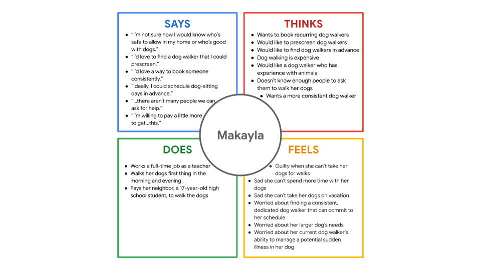
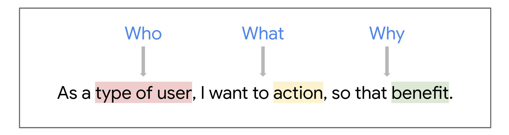
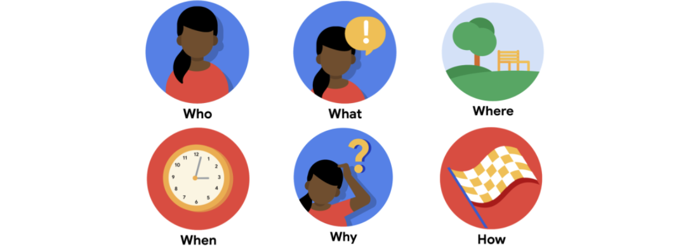
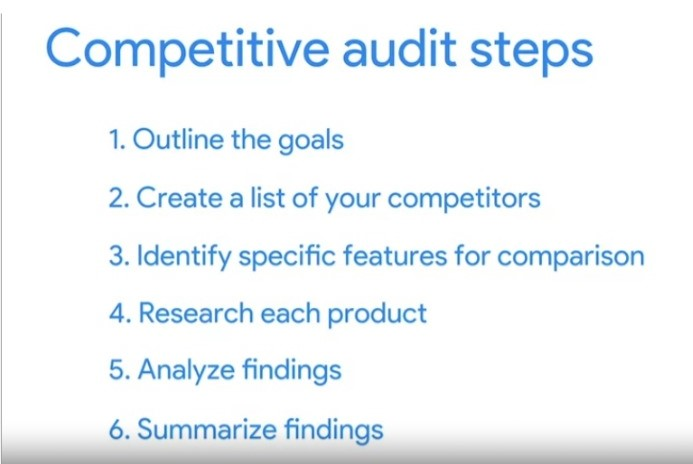
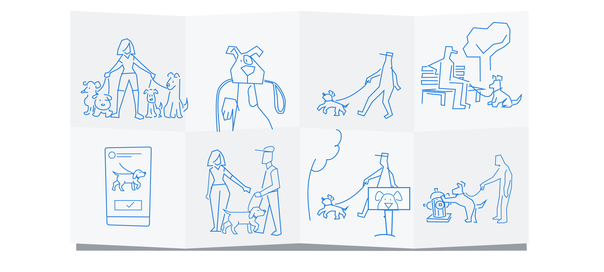

Empathizing with users and defining pain points
There are four categories that pain points can fall into:
- financial or money-related pain points;
- product, which are pain points related to quality issues;
- process, which are pain points related to the user's journey;
- support, which are pain points related to getting help from customer service.
Empathize with users
Empathy is the ability to understand someone else's feelings or thoughts in a situation. As a UX designer, empathizing with users enhances the products you create because you experience the product as your user does. The better you are at anticipating a user’s desires and needs, the more comfortable the user will feel with your design, and the more likely they will be to engage with your product long-term.
How to empathize with users
- Ask lots of questions. As a UX designer, you cannot make assumptions about the needs of your users. Instead, ask your users directly about their needs and wants, which your product design can address. Ask questions that begin with what, how, and why to gain a deeper understanding of your users’ perspective.
- Become more observant. Shift your focus to the whole user and not just the words they are using. In interviews where the user is physically present or on a video recording, watching a user interact with you or your product can provide physical cues that can affect your research outcomes. To help capture observations, you’ll take detailed notes or even record your sessions with users.
- Be an active listener. Active listening requires you to fully concentrate on, understand, and remember what is being said by the user you’re interacting with. Avoid getting distracted by where the conversation is going or what you might say next. In UX design, practicing active listening can help you get impartial feedback directly from your users, which you can apply to improve your designs.
- Request input. It’s important that the feedback you receive is objective and unbiased. Friends or colleagues often provide biased, mostly positive feedback because they want to support or please you. So, it’s important to request input from a variety of sources and a diverse group of users. When asking for feedback, use open-ended questions to understand the user’s actual thoughts on the experience or product.
- Have an open mind. We all have biases. Remember, a bias is favoring or having prejudice against something or someone, based on limited information. As UX designers, we have to set those biases aside to better empathize with others. Your goal is to understand users, not to complicate their feedback with your own opinions and emotions.
- Keep current on UX research. Follow researchers and join online communities to stay up-to-date on the research that affects UX designers and the users you’re designing for. Research is always changing and evolving as we understand more about human psychology. Staying current will give you an advantage in how you understand and interact with your audience.
Empathy vs. sympathy
Empathy is sometimes confused with sympathy, but the two terms don’t mean the same thing. Empathy means understanding someone’s feelings or thoughts, often by feeling the emotions yourself. Sympathy is the experience of showing concern or compassion without feeling the emotions themselves.
Designing with empathy will enhance the products you create. By building deeper connections with users, you’ll better understand their perspectives and pain points. Finding that connection early can guide you down the right design path and save you from extensive revisions of your product during a later phase of the design process.
Learn moreRecruiting research participants
As you can probably imagine, recruiting participants who are available to be interviewed takes time and planning. When you're on the job in the real world, you might start with a screener survey to help identify the best candidates to interview for your research study. A screener survey or simply screener, for short, is a detailed list of questions that helps researchers determine if potential participants meet the requirements of the research study.
Whether you use a screener survey or just move straight to recruiting, you should start with one important step: determine the interview goals. To determine the goals of the interview, ask yourself questions like the following:
- What do you want to learn from the interviews?
- Are there certain user problems or pain points that you need to empathize with?
- Are there any characteristics of users you want to interview?
- Why?
- How much information should we have to ensure we get a comprehensive and balanced set of data?
Write a clear list of goals to explain why you are conducting interviews, which will help determine the characteristics of participants who will be ideal for you to meet with.
As you start recruiting, aim to form a representative sample. A representative sample is a subset of the target population that seeks to accurately reflect the characteristics of the larger group. The participants in a representative sample should include user groups that have been commonly under-represented in previous research. This lack of representation is often the result of biases due to age, race, gender, or ability. Having a diverse pool of participants to choose from will help you create great experiences for all users.
When you are ready, reach out to each prospective participant. The most common way to do this is via email. Let's explore what you should include. Start with a greeting that introduces yourself and the project, then briefly explain why you are reaching out to them. Include logistics for the interview, like location, date, and time. Next, explain the setup for the interview. This is a good time to explain any parts of the interview that you'll need their consent for, like recording audio or video. Begin wrapping up your email by letting the participant know how they should confirm their interview time if they are interested. This can either be through a link to schedule their interview or through an email reply. If you have the budget, add an incentive like a gift card. This always helps sweeten the deal and makes participants excited to interview. Finally, close the email with a salutation and your name. After you confirm people to interview, it's a good idea to send email reminders the week before the interview and the night before the interview. This will help ensure that the people you've found actually show up for their interview.
Determine research goals and questions
-
Determine research goals
You want to ensure that the interviews you conduct are worthwhile, both for you and for the participants. To make the most of your time together, you need to determine clear goals for the interview. As a UX designer, what do you want to learn from the interviews? Are there certain user problems or pain points that you need to empathize with?
Here are some examples of common research goals when it comes to empathizing with users:
- I want to understand the processes and emotions that people experience around the problem my product is trying to solve.
- I want to identify common user behaviors and experiences with tasks that my product is trying to address.
- I want to understand user needs and frustrations as they relate to the product I’m designing.
-
Write interview questions
Keeping the goals of the interview in mind, you can write your interview questions. The more aligned the interview questions are with your goals, the more useful the data you obtain will be. There are a few best practices to keep in mind when writing interview questions:
- Ask open-ended questions. Open-ended questions allow the person being interviewed to answer freely, instead of with a simple “yes” or “no.” For example, if you’re designing an app to help people find dog walkers, you should ask “Could you describe your experience with finding and scheduling dog walkers?” instead of “Have you ever used an app to find a dog walker?” Keep in mind that the questions you ask during interviews should not lead or pressure participants towards a desired response; instead, asking open-ended questions lets participants share their true thoughts and perspectives.
- Keep questions short and simple.It should be easy for interview participants to understand what you’re asking.
- Ask follow-up questions.During the empathize phase of the design process, interviews should be conversational, so encouraging participants to elaborate is a best practice. After a participant answers an interview question, try asking them “Why?” or use the phrase, “Tell me more about that” to keep the conversation flowing.
Activity Exemplar: Define your research goals and questions
Here is a completed exemplar along with an explanation of how the exemplar fulfills the expectations for the previous activity. This exemplar was completed for a food delivery app called Zia's Pizza.
-
Interview goals:
- I want to understand common challenges people face trying to manage a busy schedule and meal planning.
- I want to identify frustrations people experience during the process of ordering from a restaurant.
-
Interview questions:
- Can you describe your current schedule and how you balance your responsibilities with meal planning?
- How often do you order meals from a restaurant? When you do, what is your motivation for doing so?
- What challenges do you face in the ordering process? How does this make you feel?
- Is there any way in which you feel these challenges could be resolved?
-
Target participant characteristics:
- Ages 18-62
- Lives in metropolitan or suburban areas
- People who order food from restaurants at least once a week
- Include participants of different genders
- Include participants with disabilities
In this exemplar, interview goals specific to the app were defined. In this case, the goals were to learn more about the challenges people experience while trying to manage a busy schedule and meal planning, as well as some of the frustrations they experience while ordering from a restaurant. Understanding these goals going into the interview helped researchers understand the needs and struggles of the users the app is targeting.
When choosing participants to interview, certain participant characteristics were identified to help ensure a representative sample was interviewed. For this example, the participant who was interviewed was Reena, a 37-year-old paramedic from a suburb near Denver, Colorado who eats out several nights a week and has a busy schedule. For your participants, it’s important to include a diverse but targeted group of users when conducting interviews in order to get the best data.
Find and recruit interview participants
Empathizing with users is critical when it comes to creating a great user experience. In order to empathize with users and understand their pain points, UX designers conduct interviews with real people who might use the product they’re designing.
Create a screening survey to find the right participants
The participants you select for a research study should be based on your research goals and the target users of the product you’re designing. The best way to check if potential participants meet the study’s desired characteristics and represent a diverse set of backgrounds is by sending a screener survey. A screener survey is a detailed list of questions that help researchers determine if potential participants meet the requirements of the research study.
Screening participants often requires collecting demographics, which are the characteristics of a group or individual. Demographics that you might ask about in a screener survey include:
- Age
- Geographic location
- Job title or industry
- Gender
nterviewing participants with diverse backgrounds, perspectives, and abilities is extremely important to ensure that your designs are accessible and equitable. As you start thinking about who you are designing for, aim to form a representative sample. A representative sample is a subset of the target population that seeks to accurately reflect the characteristics of the larger group.
The participants in a representative sample should include user groups that have been commonly underrepresented in previous research. This lack of representation is often the result of biases due to age, race, gender, or ability. Ultimately, the research you conduct should help you create great experiences for all users.
Start recruiting participants
How and where you find research study participants depends on the company you work for, the type of product you’re designing, time constraints for the research, the project’s budget, and the accessibility of target users. Based on these project details, you can choose from a variety of ways to find research participants.
- Personal network
- Existing user base
- Online
- Hallway testing. If recruiting participants online doesn’t seem like an option, a less formal way to recruit for your study is to ask people in person. You can use a recruiting method known as hallway testing, which means asking people that pass by in the “hallway” to try the product you’re designing. Try to position yourself in a location where you’re most likely to encounter your product’s target audience, like a dog park or a coffee shop. Hallway testing can be effective if you’re recruiting a small number of participants, if you have limited time, or if you want to conduct research for free. However, finding participants in this way is risky because the people you collect feedback from might not have all the characteristics of your product’s potential users.
- Third-party recruiting agencies
Prepare for user interviews
- Script the interview questions.
- Collect supplies you'll need for the interview, such as a printed list of your questions, a computer or paper and a pencil, and any recording equipment you might need. If you're using new equipment or technology during the interview, make sure you know how it works in advance.
- Research the users. If the users you're preparing to interview provide their personal information before the interview, be sure to take note of it. This information might include their name, demographic information, relevant user experience with the product you are designing, or details about how they found out about the interview. You can also review their answers to a screener survey, if you administered one before the interview. Lastly, practice.
- Practice. It's always a good idea to practice delivering the questions you'll ask users before you conduct a real interview.
Interviewing users
Four steps to conducting user interviews.
- Meet the participant
-
Conducting the interview:
- Follow interview etiquette. Speak in a clear and concise manner while asking questions.
- Ask open-ended questions, give you a more in-depth understanding of the users' feelings like their likes and dislikes.
- Ask follow-up questions based on how the participant answers the initial question.
-
Take notes:
- Highlight compelling quotes.
- Document observations about participants
- Record interviews
-
End interview:
- Give users a chance to share their final thoughts about any items discussed during the interview. Some participants might open up about their opinions and reveal insights that they didn’t share earlier.
- Also, remember to thank participants once more.
Empathy Maps
There are many tools a UX designer can use to empathize with users. Interviewing users is essential to understanding users’ perspectives and learning about their pain points, but that’s only the beginning of the UX research process. In this reading, you’ll learn about one of the many other tools designers can use to identify user needs: empathy maps.
Remember, empathy maps are easily understood charts that explain what UX designers have learned about a particular type of user. Empathy maps can help break down each interview into digestible pieces of information.
Types of empathy maps:
- One-user empathy maps are created by taking the data from one user's interview and turning it into an empathy map, like the example earlier in this reading. This approach helps designers distill a single user's thoughts, feelings, and traits into a format that's easier to gather data from.
- Aggregated empathy map, represents a group of users who share similar thoughts, opinions, or qualities. Aggregated empathy maps are created by creating multiple one-user empathy maps, then combining the maps where users expressed similar things into a new empathy map. This helps designers identify segments, or groups of people with similar tendencies, who will use the product. The insights in aggregated empathy maps allow designers to identify themes, which helps them better empathize with the groups they are designing for. To learn more about the different kinds of empathy maps, check out this article on empathy mapping from the Nielsen Norman Group.
Identify user's pain point
As a UX designer, empathizing is your number one superpower because it helps you spot user problems. Solving user problems is the ultimate goal of UX design. But how do you even know if a problem is really a problem?
Pain points are any UX issues that frustrate the user and block the user from getting what they need.
UX design is all about the user. You're always, always designing for the user. But who is the user and what are their struggles?
Empathy maps show us what the user thinks, says, does, and feels. Empathy maps help us get into the user's mindset, allowing us to identify their pain points.
Customer pain points are often grouped into 4 main types:
- productivity
- financial
- process
- support
Understand personas
In UX design, personas are fictional users whose goals and characteristics represent the needs of a larger group of users. Personas can help us identify patterns of behavior in users. These patterns might point to a common pain point that a group of users experiences. While personas are fictional, we don't make these characters up from scratch, we build them based on research. You've got to do your research if you want a set of personas that truly represent your potential users. As you research, you'll form images in your head about who your users are. These will become your personas.
You will build a persona to represent each key user group, and that will take time. It's worth it to build so many personas.
You need a set of personas. All user groups should be vividly represented. This shows stakeholders the diversity of their user groups, and it lets you test features against them. This leads us to the third reason for why personas are worth it. Personas stress-test designs.
Building personas
Personas are created by conducting user research and identifying common pain points, which are UX issues that frustrate and block the user from getting what they need from a product.
As you create personas, look for the most common themes in your data and group the users who personify those themes together. Generally, creating 3 to 8 personas is enough to represent the majority of a product’s user base. Think of personas as an overview of all of your research and interviews. While it’s important for personas to accurately represent users, it’s impossible to meet every one of their specific needs. Personas are also context-specific, meaning they should be focused on the behaviors and goals of users interacting with the product effectively.
Pro tip: Get your team's opinion on the product’s users before you build personas. Then, after you build personas, review those suggestions from your team and compare them to the personas you created. Point out how the data validated or contradicted their suggestions. Everyone on your team needs to understand the personas in order to truly connect with your users.
Learn more about personas
Craft user stories
Learn more about user stories
You’ve already learned about empathy maps and personas and how they can help you empathize with the users you’re designing for. Another helpful way to understand your users is to build a user story around their experiences with your product. A user story is a fictional one-sentence story told from the persona’s point of view to inspire and inform design decisions. This is a great opportunity to use your imagination as you create the stories that capture the needs of your users. User stories should be written in the following format:
As a type of user (who), I want to action (what) so that benefit (why).
Using this format is a clear way to ensure your user story is communicating everything you need to know about the persona. The user stories you create will be very valuable as you start designing your product. User stories can also serve as a “checklist” to make sure you’re addressing and solving the key problems your users might face when engaging with your product.
Different users have different needs, so be sure to practice empathy and keep their unique needs in mind when writing user stories. To help you write the most effective user stories, check out this article from Interaction Design Foundation about how to write user stories
Personas and user stories represent the needs of the users you’re designing for. The more detailed and accurate your personas and user stories are, the better you will be at designing products that meet their needs.
Consider edge cases
When building a new or improved product, the designer's goal is to keep all users on the happy path. The happy path describes a user story with a happy ending. For this user, everything goes as they expect and they reach their goal without issue.
An edge case is a rare situation or unexpected problem that interrupts a standard user experience. Good UX anticipates edge cases and reroute users back to the happy path when things don't go as planned. In edge cases, the obstacle is often beyond the user's control to fix.
UX design pro tips for spotting and resolving potential edge cases before the product launches, so other users don't end up in Iyla's situation:
- Create personas and user stories. If UX designers make sure their personas and user stories account for a wide variety of users and problems, they can keep even the most vulnerable users on the happy path.
- Thoroughly review the project before launch. In the rush to launch a product, UX designers might focus only on the happy path. Giving the project a final good review from the user's perspective, helps designers identify edge cases.
- Use wireframes. Wireframes help visualize the project, which makes it easier to identify potential user pain points and fix them before launch for folks who are not visually impaired.
Create a user journey map
A user journey is the series of experiences a user has as they achieve a specific goal. User journeys built off the personas and stories you've already created. They help you think and feel like the user, which is super important. If you can't put yourself in the user's shoes, you can't be sure your design will really help them. Before you start the user journey, you need a journey map. A journey map is just what it sounds like, an illustration of what the user goes through to achieve their goals.
A user journey map helps UX designers:
- create obstacle-free paths for users
- reduces the impact of designer bias, which you might remember as the tendency for the designer to design according to their own needs and wants instead of the users
- lets you thoroughly document the entire sequence of events and interactions a user experiences, including the user's interaction with your design. You can really focus on how a specific persona, not you, thinks and feels at every step of the journey
- highlights new pain points
Consider accessibility when empathizing
Accessibility is the design of products, devices, services, or environments for people with disabilities. Designing for accessibility is about considering all users’ journeys, keeping their permanent, temporary, or situational disabilities in mind. By researching how people with disabilities interact with products like yours, you can better understand how to design for them. It’s not possible to accurately guess all the ways that a user might experience your product, which is one reason why including people with disabilities in your research is so important.
Assistive technologies
Creating a product design that takes every range of ability into account can be incredibly difficult. Thankfully, there are services and apps designed to help bridge the gap. For example, one service that’s recently been added by phone providers is Real-Time Texting, which lets users text during a phone call to improve communication.
Another feature that helps people with disabilities is alternative text. People who have low vision or are blind often rely on screen readers to read the content on their screens aloud. But, if your informational icons don’t have labels or alternative text, the screen reader can’t describe the functionality of that button to the user. Not every image or icon is informational, so only include descriptions when necessary.
Why is it important to consider someone with a disability when creating personas, user stories, and user journeys? Select all that apply.
To meet diversity and accessibility expectations - this should not be selected Considering diversity and accessibility is a part of creating design solutions; it isn’t to meet expectations. All people should have access to the same human rights. When designing, it’s important to remember that people with and without disabilities share the same goal for any given user problem that a design solution is trying to solve.
Discussing the value of disability technology: Disability Technology from TEDx Talks on YouTube
An explanatory guide for phone accessibility: Smartphone accessibility: a comprehensive guide from Uswitch
Google’s accessibility information hub homepage
Putting inclusive design into practice
To put inclusive design into practice, it’s important to immerse yourself in the assistive technology that people with disabilities might use and to have conversations with them about their experiences. The best way to design empathetically for the world around you is to engage with your users and ask them questions about the way your designs could help them succeed.
To learn more about inclusive design, here are some additional resources to get you started:
- Describing ways to design products inclusively: Inclusive Design: 12 Ways to Design for Everyone from Shopify
- Google’s accessible approach to inclusive design: An Accessible Process for inclusive Design from Google I/O
- Breaking down important inclusive design principles: 6 Principles for Inclusive Design from UX Planet
The curb-cut effect is a phenomenon that describes how products and policies designed for people with disabilities often end up helping everyone.
Define problem and hypothesis statements
A problem statement is a clear description of the user's needs that should be addressed. Problem statements align the team on which user problem to focus on, giving everyone a clear goal. A strong problem statement is human-centered. It should be broad enough to allow for some creative freedom, but narrow enough that it can actually be solved by a design solution. Problem statements can be written using a simple formula:
- Start with the name of the user.
- Add a short description of the user's characteristics.
- Clearly describe the user's need and explain why the user has that need.
What can we learn from an effective problem statement?
- problem statements help us establish goals. An effective problem statement tells you what the user really needs. Defining the goal clearly and concisely gets everyone on the design team onboard and focused on the same thing.
- problem statements help us understand constraints. We want to know what's keeping users from satisfying their needs
- help us define deliverables
- problem statements help us create benchmarks for success
The connection between pain points and problem statements
As a reminder, pain points are any UX issue or friction that frustrates the user and blocks them from getting what they need. Minimizing pain points keeps users happy and encourages them to keep interacting with the product.
The 5 Ws and H: who, what, when, where, why, and how
The most common framework used to create problem statements is the 5 Ws and H framework. After you define the user’s pain points, you can answer who, what, when, where, why, and how to solve the user’s problem.
- Who is experiencing the problem? Knowing your users and their background is key to creating successful solutions for them.
- What are the pain points you’re trying to solve? Determining a user’s pain points early allows you to answer the rest of these questions and clarify the context of the pain points.
- Where is the user when they’re using the product? A user’s physical context matters to your design.
- When does the problem occur? Maybe it’s right after the end of a long and tedious process, or maybe it’s something that happens daily. Knowing when the problem occurs can help you better empathize with the user’s feelings.
- Why is the problem important? Knowing how this problem affects your user’s experience and life will help to clarify the potential consequences.
- How are users reaching their goals by using the product? Understanding how users reach their goals allows you to map the user journey that they take through your product.
Problem statements provide clarity about your users’ goals and help UX designers identify constraints that prevent users from meeting those goals. Problem statements also help your team measure success.
Read more:
Define hypothesis statements
As a reminder, here's where you're at in the design process:
- Empathizing with users allows you to consider the product experience from the users’ perspective. By connecting with people directly, like through interviews, you can discover and understand users' likes, dislikes, and pain points.
- Then, sort through research you collected about users to define the problem they're facing. Creating a problem statement helps you clearly define the user pain points that your future designs can address.
- Now, you can begin coming up with solutions that address those problems! You’re ready to create hypothesis statements. A hypothesis statement is an educated guess about what you think the solution to a design problem might be. You know the challenges users are facing, so it’s time to consider how your designs can alleviate their pain points.
Hypothesis statements don’t have a single standard formula to follow, but there are two common methods you can try using to write one:
- you can use the if / then format - focus directly on the needs of users
- you can use the we believe format - take the perspective of your team into account, while remaining empathetic to the needs of users
You might encounter situations where you have multiple hypothesis statements for one problem statement. That’s okay! There will always be multiple solutions for the problems that users are facing. Your job as a UX designer is to use your creativity and problem-solving skills to decide which solutions work best for the unique users you’re designing for.
Determine a value proposition
Time to think about what your users need, it's important to start thinking about how your product meets those needs. This is known as a value proposition. A value roposition is the reason why a consumer should use a product or a service. You can think of this statement as the reason users will be interested and willing to engage with your product. Value propositions ensure that users have a reason to use the product that you are creating, as opposed to any other product currently available. As you think about the value proposition for your first project, your first step should be to answer these two important questions:
- What does your product do?
- And why should the user care?
One of the most important things to know about value propositions is that they need to be short, clear, and to the point. Users want to be able to easily identify exactly how your product will meet their unique needs and what sets your product apart in the market. Sometimes users won’t know what they need until you explain it to them. That’s the real heart of product design innovation.
Understand human factors
The human factor refers to the range of variables humans bring to their product interactions. Common human factors that inform design include but are not limited to:
- limited concentration
- impatience
- fears
- prejudices
- limited memory
- need for motivation
Explore psychology principles that influence design
Psychological phenomena that can impact UX design.
- Von Restorff effect isolation effect, states that when multiple similar objects are present, the one that differs from the rest is most likely to be remembered.
- serial position effect, says that when people are given a list of items, they are more likely to remember the first few and the last few, while the items in the middle tend to blur.
- Hick's law, states that the more options a user has, the longer it takes for them to make a decision
Understand design ideation
- Understanding design ideation
- Conducting competitive audits
- Brainstorming approaches like How Might We and Crazy Eights
- Determining if we need additional research
Learn more about design ideation
design ideation is the process of generating a broad set of ideas on a given topic without judging or evaluating them. When you start thinking of ideas, you want to come up with as many as possible. The aim is to generate lots of ideas, even ones that may seem ridiculous at first.
Preparing for ideation
-
 Empathize with your user. Empathizing is the first step in
the design process. You need to know who you’re solving for and
what their needs are. You empathized with your user already by
creating empathy maps, personas, user stories, and user journey
maps.
Empathize with your user. Empathizing is the first step in
the design process. You need to know who you’re solving for and
what their needs are. You empathized with your user already by
creating empathy maps, personas, user stories, and user journey
maps.
- Define the problem. Defining is the second step in the design process. The problem you’re trying to solve should be well-defined, so that everyone on your team can think of ideas to solve the same problem. Knowing exactly what problem you need to solve will also keep your users’ needs top-of-mind.
- Establish a creative environment. You’ll need a comfortable space where everyone on your team can get together and present their ideas. If you’re meeting in person, choose an ideation space that’s different from your usual workspace. If you’re ideating virtually, try to find a different space in your home that’s free of clutter and distractions.
- Set a time limit. There are an endless number of possible products and features you could design, so give yourself plenty of time to come up with ideas. However, you can’t brainstorm forever, so you’ll also need to set a time to stop brainstorming and start thinking more deeply about the ideas you’ve come up with.
-
 Assemble a diverse team. You’re trying to come up with as
many different ideas as possible. An inclusive team of people,
with different races, genders, abilities, and backgrounds, will
help you come up with all kinds of solutions.
Assemble a diverse team. You’re trying to come up with as
many different ideas as possible. An inclusive team of people,
with different races, genders, abilities, and backgrounds, will
help you come up with all kinds of solutions.
- Think outside the box. Don’t limit yourself to traditional ideas and solutions. If you have a cool idea that seems a little different, write it down! Think big and get creative while ideating.
Ideation can be defined as the process of generating a broad set of ideas on a given topic with no attempt to judge or evaluate them. The broad set of ideas part is really important. Ideation is all about coming up with lots and lots of ideas. The no judgment part is important too.
If you want to learn more, check out this article from CareerFoundry, A Guide To The Most Important Ideation Techniques, which highlights some common design ideation techniques.
As you ideate, it's important to think about the business you're designing for. This includes the business's
- voice - UX designers often work closely with marketing and branding teams. That's because branding has a big effect on how users experience a product. Two major components of branding are voice and the tone. Even though a brand isn't a human being, it still has a personality. Users don't want to communicate with a brand that uses robotic sounding language. Instead, users want to interact with the brand whose voice and tone sounds human and engaging. Here's the thing: Voice and tone have a huge impact on a user's experience with a product.
- tone
- budget
Learn more about competitive audits
Competitive audits are one of the many valuable steps you can take during the ideation process. A competitive audit is an overview of your competitors’ strengths and weaknesses. Analyzing the brands and products of competitors, or the companies who offer similar products as you do, can give you a well-rounded foundation of knowledge about the market your product will enter. That knowledge will carry into your designs and help you create a product that’s helpful and unique for users. As a UX designer, you’ll likely partner with folks from other teams, like marketing or product management, to run a competitive audit.
Your competition falls into two categories: direct and indirect. Examining both of these competitors can offer insights about the path your designs might take and the users that you’re designing for.
- Direct competitors are companies that have offerings similar to your product and focus on the same audience.
- Indirect competitors can have a similar set of offerings and a different audience, or a different set of offerings with the same audience.
Why are competitive audits important?
Consider how much work your direct and indirect competitors have already done to design and market their products to users. They’ve already had an impact on the industry that your product will enter. Studying these companies, their designs, and their user feedback is a fantastic source of information.
Competitive audits can offer many benefits throughout your ideation phase, including:
- Giving you an idea of products already in the market and their designs.
- Suggesting ideas to solve early problems that you’re facing with your own designs.
- Revealing the ways that current products in the market are not meeting users’ needs. This is a gap for your product to address!
- Demonstrating the expected life cycle of a product in the same market as yours.
- Informing all the different iterations your product could take and how those performed for your competitors.
By investing time into competitive audits, your team will be able to learn from the mistakes of your competitors and can avoid making those mistakes yourselves. Think of audits as a tool to help you create something for your users that’s completely different from the competition, combining all of the strengths of your competitors’ offerings into one fantastic product!
Want to explore competitive audits in more detail? Here are a couple of articles to help you keep digging: A Product Designer's Guide to Competitive Analysis from Toptal and How to Conduct and Prepare a Competitive Analysis from Edward Lowe Foundation.
Limitations of competitive audit
- Stifle creativity. If you spend too much time focusing on what others are doing, you might prevent yourself from creating a truly innovative product. Innovation doesn't happen by copying the competition. The key is to understand what the competition is doing and use that as a starting point to push forward and innovate.
- Success of the competitive audit depends on how well you interpret the findings. Analyzing data can be tricky, and it's a skill that you'll develop throughout your career as a designer. Working on a team can be helpful here as you'll have others to interpret the data with.
- Not all designs work in all use cases. The features that work well for a competitor might not work well for your product, if you serve different users.
You should do competitive audits on a regular basis, not just once. You want to stay on top of what your competitors are doing and keep an eye out for new competitors
Steps to conduct a competitive audit
- Outline the audit goals
- List competitors
- Determine the specific competitor aspects you want to compare (first impressions, interaction, visual design, content)
- Research each company (audience, first impressions, interaction, visual design, content)
- Summarize your findings in a report
An effective competitive audit can help:
- Inform your design process
- Solve usability and accessibility problems
- Reveal gaps in the market
- Provide reliable evidence about whether designs work or not
- Save time, money, and energy
Use How Might We to ideate
-
How might we
“How might we” (HMW) is a design thinking activity used to translate problems into opportunities for design. HMW gets your creativity flowing and encourages you to think about the problem from different perspectives. This new vantage point helps you create a wide variety of solutions to the user problem you’re trying to address. During a HMW exercise, you’d create a list of questions that start with “How might we” and use those to spark ideas for solutions.
To create good HMW questions, you need a well-defined problem statement. From there, you can reframe this problem statement into questions that will help you come up with ideas to solve the problem.
Frame HMW questions
- Amp up the good
- Explore the opposite
- Change a status quo
- Break the point of view into pieces
- Remove the bad
- Go after the adjective
- Question an assumption
- Create an analogy using the esteblished need of context
- Identify unexpected resoureces that can provide assistance
Best practices for thinking of HMWs:
- Be broad. A good HMW should allow for multiple solutions.
- But don’t be too broad. You want your HMWs to be comprehensive, but narrow enough to keep your solutions focused.
- Make multiple drafts. It’s okay to change your HMW questions after you’ve written them. If you find that your HMW doesn’t help you think of any useful solutions, change it up!
- Be creative. HMWs are meant to be imaginative and even fun.
- Write as many HMWs as you can. The more HMWs you have, the more solutions you can come up with.
-
Crazy Eights
Crazy Eights is a great way to get ideas flowing for any design problem you need to solve. With Crazy Eights, you’ll sketch eight different designs, each with a new idea for solving the user’s problem.
Best practices
- Do a creative warm-up exercise. Complete an activity where you draw the person next to you without looking at your paper, or have everyone draw their own interpretation of a word or phrase.
- Make sure your problem is well defined. Develop a set of Crazy Eights for one How might we question or one problem statement at a time.
- Don’t judge your ideas. Ideating is all about creating lots of ideas, not creating perfect ones!
- Don’t judge other people’s ideas. Keep an open mind when other people are presenting their sketches.
- Include a diverse group. Since Crazy Eights are often done in a group setting, it’s best that your group represents a variety of work roles, experiences, abilities, genders, and backgrounds. This will help your team have a wide range of ideas to choose from.
- Ideate in a comfortable environment. Do this exercise in a location that’s relaxed and encourages creative thinking.
- Don’t be afraid of sketching. You don’t have to be an artist to be a UX designer, and your sketches during Crazy Eights don’t have to be perfect. You just need to clearly communicate your ideas.
Crazy Eights is an exciting design ideation exercise that generates a lot of ideas in a small amount of time. If you have five people do the exercise at the same time, you’ll have 40 potential solutions after only eight minutes. Crazy Eights also forces you to think outside the box because you have to come up with many ideas in a short timeframe, without judging them. This means that you will have lots of unique, nontraditional solutions to consider.
Additional research
New blockers may come up during the ideation phase. If they do, designers should consider if further research and data collection is needed. In order to create a product that addresses user needs and wants, designers may need more information in order to resolve them.